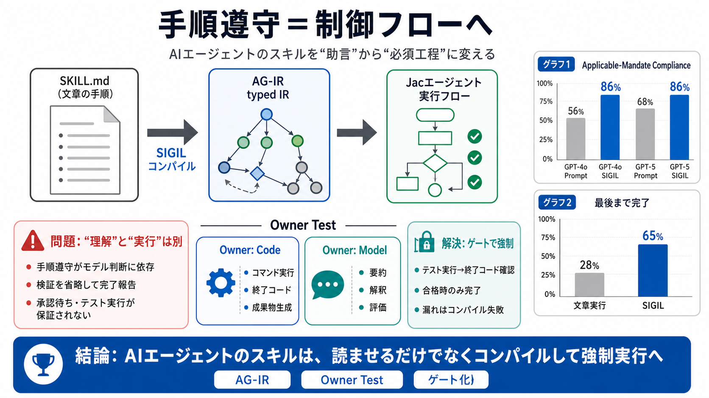

What Are Agent Skills? The Complete 2026 Guide
Agent skills are modular packages of instructions, workflows, scripts, and references that give AI agents specialized ca…

Agent skills are modular packages of instructions, workflows, scripts, and references that give AI agents specialized ca…
4. Minimize privileges: Use `allowed-tools` where supported to restrict what the agent can do during skill execution. 5.…
In our example, the PDF skill includes a pre-written Python script that reads a PDF and extracts all form fields. Claude…
Required fields: `name` and `description` Field requirements: `name`: Maximum 64 characters Must contain only lower…
Unlike software packages with unit tests and CI/CD pipelines, skills currently lack standardized testing frameworks. Ant…